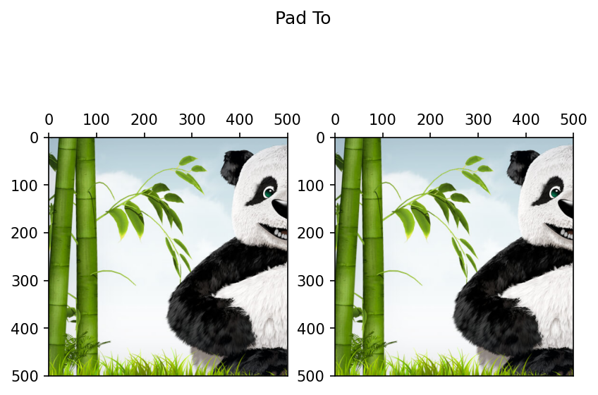
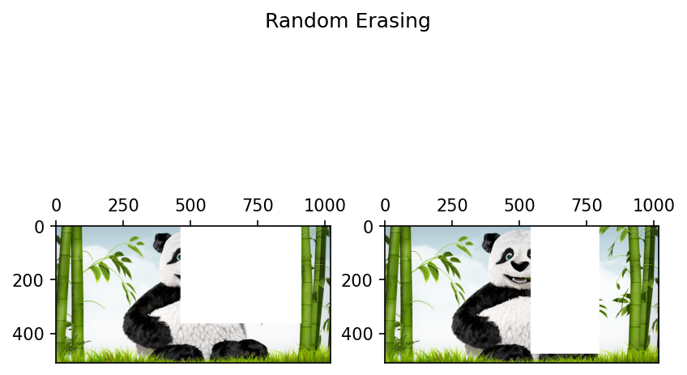
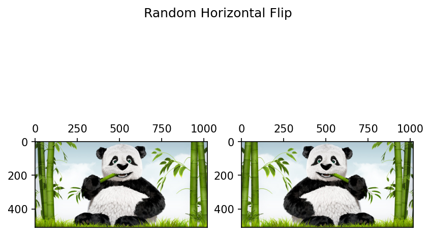

%%capture
!pip install kornia
!pip install kornia-rsData Augmentation 2D
Basic
2D
Data augmentation
kornia.augmentation
A show case of the Data Augmentation operation available on Kornia for images.

Just a simple examples showing the Augmentations available on Kornia.
For more information check the docs: https://kornia.readthedocs.io/en/latest/augmentation.module.html
import kornia
import matplotlib.pyplot as plt
from kornia.augmentation import (
CenterCrop,
ColorJiggle,
ColorJitter,
PadTo,
RandomAffine,
RandomBoxBlur,
RandomBrightness,
RandomChannelShuffle,
RandomContrast,
RandomCrop,
RandomCutMixV2,
RandomElasticTransform,
RandomEqualize,
RandomErasing,
RandomFisheye,
RandomGamma,
RandomGaussianBlur,
RandomGaussianNoise,
RandomGrayscale,
RandomHorizontalFlip,
RandomHue,
RandomInvert,
RandomJigsaw,
RandomMixUpV2,
RandomMosaic,
RandomMotionBlur,
RandomPerspective,
RandomPlanckianJitter,
RandomPlasmaBrightness,
RandomPlasmaContrast,
RandomPlasmaShadow,
RandomPosterize,
RandomResizedCrop,
RandomRGBShift,
RandomRotation,
RandomSaturation,
RandomSharpness,
RandomSolarize,
RandomThinPlateSpline,
RandomVerticalFlip,
)Load an Image
The augmentations expects an image with shape BxCxHxW
import io
import requests
def download_image(url: str, filename: str = "") -> str:
filename = url.split("/")[-1] if len(filename) == 0 else filename
# Download
bytesio = io.BytesIO(requests.get(url).content)
# Save file
with open(filename, "wb") as outfile:
outfile.write(bytesio.getbuffer())
return filename
url = "https://raw.githubusercontent.com/kornia/data/main/panda.jpg"
download_image(url)'panda.jpg'img_type = kornia.io.ImageLoadType.RGB32
img = kornia.io.load_image("panda.jpg", img_type, "cpu")[None]def plot_tensor(data, title=""):
b, c, h, w = data.shape
fig, axes = plt.subplots(1, b, dpi=150, subplot_kw={"aspect": "equal"})
if b == 1:
axes = [axes]
for idx, ax in enumerate(axes):
ax.imshow(kornia.utils.tensor_to_image(data[idx, ...]))
ax.set_ylim(h, 0)
ax.set_xlim(0, w)
ax.tick_params(top=True, labeltop=True, bottom=False, labelbottom=False)
fig.suptitle(title)
plt.show()plot_tensor(img, "panda")2D transforms
Sometimes you may wish to apply the exact same transformations on all the elements in one batch. Here, we provided a same_on_batch keyword to all random generators for you to use. Instead of an element-wise parameter generating, it will generate exact same parameters across the whole batch.
# Create a batched input
num_samples = 2
inpt = img.repeat(num_samples, 1, 1, 1)Intensity
Random Planckian Jitter
randomplanckianjitter = RandomPlanckianJitter("blackbody", same_on_batch=False, keepdim=False, p=1.0)
plot_tensor(randomplanckianjitter(inpt), "Planckian Jitter")Random Plasma Shadow
randomplasmashadow = RandomPlasmaShadow(
roughness=(0.1, 0.7), shade_intensity=(-1.0, 0.0), shade_quantity=(0.0, 1.0), same_on_batch=False, keepdim=False, p=1.0
)
plot_tensor(randomplasmashadow(inpt), "Plasma Shadow")Random Plasma Brightness
randomplasmabrightness = RandomPlasmaBrightness(
roughness=(0.1, 0.7), intensity=(0.0, 1.0), same_on_batch=False, keepdim=False, p=1.0
)
plot_tensor(randomplasmabrightness(inpt), "Plasma Brightness")
Random Plasma Contrast
randomplasmacontrast = RandomPlasmaContrast(roughness=(0.1, 0.7), same_on_batch=False, keepdim=False, p=1.0)
plot_tensor(randomplasmacontrast(inpt), "Plasma Contrast")Color Jiggle
colorjiggle = ColorJiggle(0.3, 0.3, 0.3, 0.3, same_on_batch=False, keepdim=False, p=1.0)
plot_tensor(colorjiggle(inpt), "Color Jiggle")Color Jitter
colorjitter = ColorJitter(0.3, 0.3, 0.3, 0.3, same_on_batch=False, keepdim=False, p=1.0)
plot_tensor(colorjitter(inpt), "Color Jitter")
Random Box Blur
randomboxblur = RandomBoxBlur((21, 5), "reflect", same_on_batch=False, keepdim=False, p=1.0)
plot_tensor(randomboxblur(inpt), "Box Blur")Random Brightness
randombrightness = RandomBrightness(brightness=(0.8, 1.2), clip_output=True, same_on_batch=False, keepdim=False, p=1.0)
plot_tensor(randombrightness(inpt), "Random Brightness")Random Channel Shuffle
randomchannelshuffle = RandomChannelShuffle(same_on_batch=False, keepdim=False, p=1.0)
plot_tensor(randomchannelshuffle(inpt), "Random Channel Shuffle")Random Contrast
randomcontrast = RandomContrast(contrast=(0.8, 1.2), clip_output=True, same_on_batch=False, keepdim=False, p=1.0)
plot_tensor(randomcontrast(inpt), "Random Contrast")Random Equalize
randomequalize = RandomEqualize(same_on_batch=False, keepdim=False, p=1.0)
plot_tensor(randomequalize(inpt), "Random Equalize")Random Gamma
randomgamma = RandomGamma((0.2, 1.3), (1.0, 1.5), same_on_batch=False, keepdim=False, p=1.0)
plot_tensor(randomgamma(inpt), "Random Gamma")Random Grayscale
randomgrayscale = RandomGrayscale(same_on_batch=False, keepdim=False, p=1.0)
plot_tensor(randomgrayscale(inpt), "Random Grayscale")Random Gaussian Blur
randomgaussianblur = RandomGaussianBlur((21, 21), (0.2, 1.3), "reflect", same_on_batch=False, keepdim=False, p=1.0)
plot_tensor(randomgaussianblur(inpt), "Random Gaussian Blur")Clipping input data to the valid range for imshow with RGB data ([0..1] for floats or [0..255] for integers).
Random Gaussian Noise
randomgaussiannoise = RandomGaussianNoise(mean=0.2, std=0.7, same_on_batch=False, keepdim=False, p=1.0)
plot_tensor(randomgaussiannoise(inpt), "Random Gaussian Noise")Clipping input data to the valid range for imshow with RGB data ([0..1] for floats or [0..255] for integers).
Clipping input data to the valid range for imshow with RGB data ([0..1] for floats or [0..255] for integers).Random Hue
randomhue = RandomHue((-0.2, 0.4), same_on_batch=False, keepdim=False, p=1.0)
plot_tensor(randomhue(inpt), "Random Hue")Random Motion Blur
randommotionblur = RandomMotionBlur((7, 7), 35.0, 0.5, "reflect", "nearest", same_on_batch=False, keepdim=False, p=1.0)
plot_tensor(randommotionblur(inpt), "Random Motion Blur")Random Posterize
randomposterize = RandomPosterize(bits=3, same_on_batch=False, keepdim=False, p=1.0)
plot_tensor(randomposterize(inpt), "Random Posterize")Random RGB Shift
randomrgbshift = RandomRGBShift(
r_shift_limit=0.5, g_shift_limit=0.5, b_shift_limit=0.5, same_on_batch=False, keepdim=False, p=1.0
)
plot_tensor(randomrgbshift(inpt), "Random RGB Shift")Random Saturation
randomsaturation = RandomSaturation((1.0, 1.0), same_on_batch=False, keepdim=False, p=1.0)
plot_tensor(randomsaturation(inpt), "Random Saturation")Random Sharpness
randomsharpness = RandomSharpness((0.5, 1.0), same_on_batch=False, keepdim=False, p=1.0)
plot_tensor(randomsharpness(inpt), "Random Sharpness")Random Solarize
randomsolarize = RandomSolarize(0.3, 0.1, same_on_batch=False, keepdim=False, p=1.0)
plot_tensor(randomsolarize(inpt), "Random Solarize")Geometric
Center Crop
centercrop = CenterCrop(150, resample="nearest", cropping_mode="resample", align_corners=True, keepdim=False, p=1.0)
plot_tensor(centercrop(inpt), "Center Crop")Pad To
padto = PadTo((500, 500), "constant", 1, keepdim=False)
plot_tensor(padto(inpt), "Pad To")
Random Affine
randomaffine = RandomAffine(
(-15.0, 5.0),
(0.3, 1.0),
(0.4, 1.3),
0.5,
resample="nearest",
padding_mode="reflection",
align_corners=True,
same_on_batch=False,
keepdim=False,
p=1.0,
)
plot_tensor(randomaffine(inpt), "Random Affine")Random Crop
randomcrop = RandomCrop(
(150, 150),
10,
True,
1,
"constant",
"nearest",
cropping_mode="resample",
same_on_batch=False,
align_corners=True,
keepdim=False,
p=1.0,
)
plot_tensor(randomcrop(inpt), "Random Crop")Random Erasing
randomerasing = RandomErasing(scale=(0.02, 0.33), ratio=(0.3, 3.3), value=1, same_on_batch=False, keepdim=False, p=1.0)
plot_tensor(randomerasing(inpt), "Random Erasing")
Random Elastic Transform
randomelastictransform = RandomElasticTransform(
(27, 27), (33, 31), (0.5, 1.5), align_corners=True, padding_mode="reflection", same_on_batch=False, keepdim=False, p=1.0
)
plot_tensor(randomelastictransform(inpt), "Random Elastic Transform")Random Fish Eye
c = kornia.core.tensor([-0.3, 0.3])
g = kornia.core.tensor([0.9, 1.0])
randomfisheye = RandomFisheye(c, c, g, same_on_batch=False, keepdim=False, p=1.0)
plot_tensor(randomfisheye(inpt), "Random Fish Eye")
Random Horizontal Flip
randomhorizontalflip = RandomHorizontalFlip(same_on_batch=False, keepdim=False, p=0.7)
plot_tensor(randomhorizontalflip(inpt), "Random Horizontal Flip")
Random Invert
randominvert = RandomInvert(same_on_batch=False, keepdim=False, p=1.0)
plot_tensor(randominvert(inpt), "Random Invert")Random Perspective
randomperspective = RandomPerspective(0.5, "nearest", align_corners=True, same_on_batch=False, keepdim=False, p=1.0)
plot_tensor(randomperspective(inpt), "Random Perspective")Random Resized Crop
randomresizedcrop = RandomResizedCrop(
(200, 200),
(0.4, 1.0),
(2.0, 2.0),
"nearest",
align_corners=True,
cropping_mode="resample",
same_on_batch=False,
keepdim=False,
p=1.0,
)
plot_tensor(randomresizedcrop(inpt), "Random Resized Crop")
Random Rotation
randomrotation = RandomRotation(15.0, "nearest", align_corners=True, same_on_batch=False, keepdim=False, p=1.0)
plot_tensor(randomrotation(inpt), "Random Rotation")Random Vertical Flip
randomverticalflip = RandomVerticalFlip(same_on_batch=False, keepdim=False, p=0.6, p_batch=1.0)
plot_tensor(randomverticalflip(inpt), "Random Vertical Flip")Random Thin Plate Spline
randomthinplatespline = RandomThinPlateSpline(0.6, align_corners=True, same_on_batch=False, keepdim=False, p=1.0)
plot_tensor(randomverticalflip(inpt), "Random Thin Plate Spline")Mix
Random Cut Mix
randomcutmixv2 = RandomCutMixV2(4, (0.2, 0.9), 0.1, same_on_batch=False, keepdim=False, p=1.0)
plot_tensor(randomcutmixv2(inpt), "Random Cut Mix")Random Mix Up
randommixupv2 = RandomMixUpV2((0.1, 0.9), same_on_batch=False, keepdim=False, p=1.0)
plot_tensor(randommixupv2(inpt), "Random Mix Up")Random Mosaic
randommosaic = RandomMosaic(
(250, 125),
(4, 4),
(0.3, 0.7),
align_corners=True,
cropping_mode="resample",
padding_mode="reflect",
resample="nearest",
keepdim=False,
p=1.0,
)
plot_tensor(randommosaic(inpt), "Random Mosaic")Random Jigsaw
# randomjigsaw = RandomJigsaw((2, 2), ensure_perm=False, same_on_batch=False, keepdim=False, p=1.0)
# plot_tensor(randomjigsaw(inpt), "Random Jigsaw")